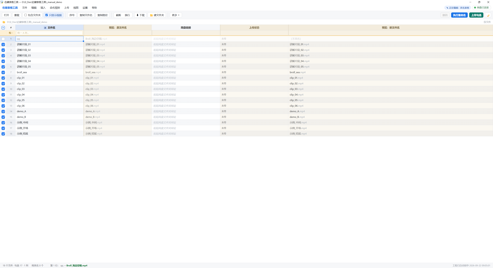
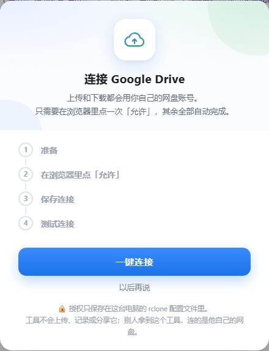
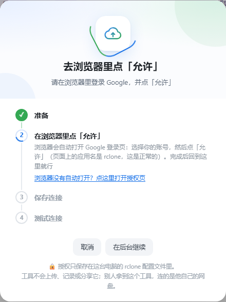
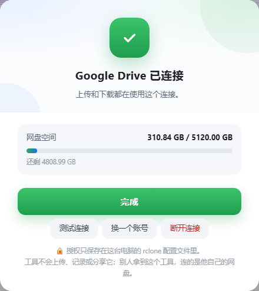
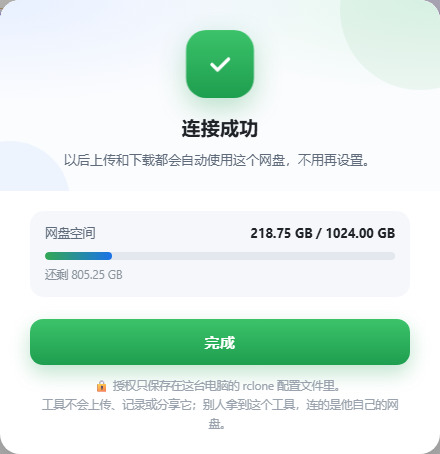
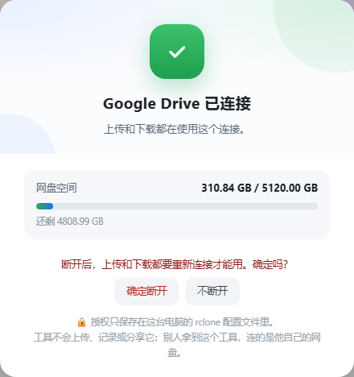
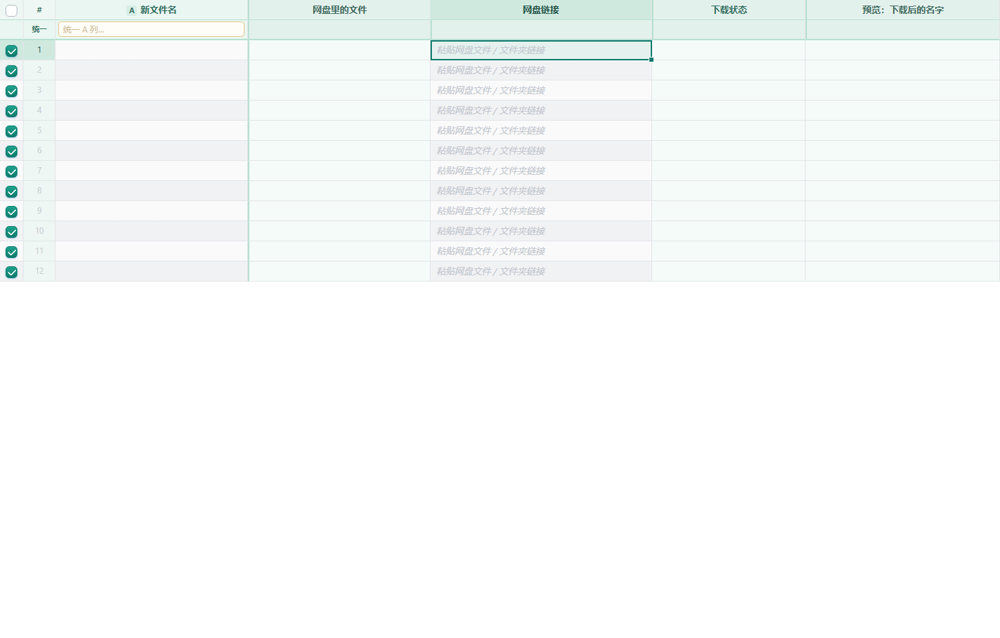
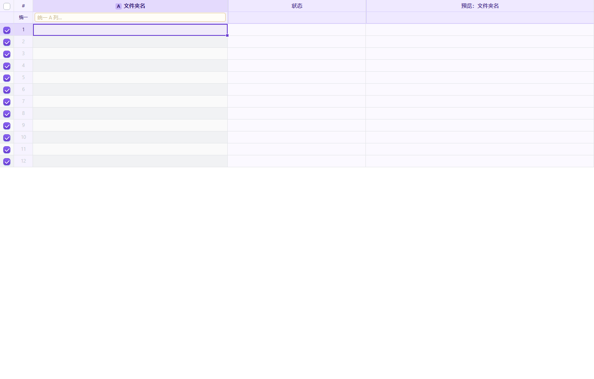

批量改名、上传 / 下载 Google Drive、批量建文件夹。下面配的是本机实际界面截图。
不需要管理员权限。程序装在 %LOCALAPPDATA%\RightClickTableTool。
中间是改名表格：左边各列拼成新文件名，右边是预览、网盘链接和上传状态。

Ctrl+Shift+D）Ctrl+Shift+N）Ctrl+Enter 执行改名。gdrive 远程上传。.renamer_project.json，可导出 / 导入、还原原名。别人上传到网盘的文件有时候没带后缀，下载下来就是光秃秃的 a022，一个个手改很麻烦。
菜单 命名规则 → 🏷 批量设置扩展名…（视图菜单里也有，并显示当前模式）。
| 模式 | 效果 |
|---|---|
| 沿用原来的扩展名 | 默认。a022.mp4 改名后还是 .mp4，本来没后缀的还是没有 |
| 统一用这个后缀 | 填 .mp4（不填点也行，会自动补）。勾上「只补给本来没有后缀的文件」就只补缺，不动已有后缀的；取消勾选则全部换成这个后缀 |
| 去掉扩展名 | 新文件名里不带任何后缀 |
弹窗底部实时显示「勾选的 N 个文件里，M 个的后缀会变」，并列出前几条对照。应用后先看 预览：新文件名 列，确认无误再点「执行重命名」。
作用于哪张表：弹窗顶部有「作用于：✎ 改名表 / ⬇ 下载表」，各显示勾选了几个文件，点哪个就改哪张，两张表互不影响。 默认选你正在编辑的那张；那张一个勾选都没有、另一张有时，会自动选另一张。
已经下载好的文件：在下载表里应用后，若勾选的行已经下载到磁盘、名字还没后缀，会再问一句是否一起补上，确认后直接在下载文件夹里改好（只改后缀，不会覆盖任何文件）。
只显示视频：没有后缀的文件认不出类型，不会再被这个开关藏起来。
上传和网盘下载都要用你自己的 Google Drive。授权一般只需做一次：浏览器里登录并点「允许」，其余自动完成。
点 一键连接。窗口会列出四步：准备 rclone → 浏览器点「允许」→ 保存 gdrive 配置 → 测试连接。

选择 Google 账号，在权限页点 允许（应用名显示为 rclone，属正常现象）。若浏览器没自动打开，用窗口里的「点这里打开授权页」。

之后可随时点「网盘已连接」查看空间、测试连接、换账号或断开。



若提示缺少 rclone：重新运行文件夹里的 安装.bat，再回来点「一键连接」。


双击 卸载.bat。只删程序和右键菜单，不动视频和工程文件。
| 快捷键 | 作用 |
|---|---|
Ctrl+Enter | 执行改名 / 下载 / 建文件夹 |
Ctrl+Shift+D | 网盘下载面板 |
Ctrl+Shift+N | 建文件夹面板 |
Ctrl+Shift+C | 复制文件名 |
Ctrl+Shift+P | 复制完整路径 |